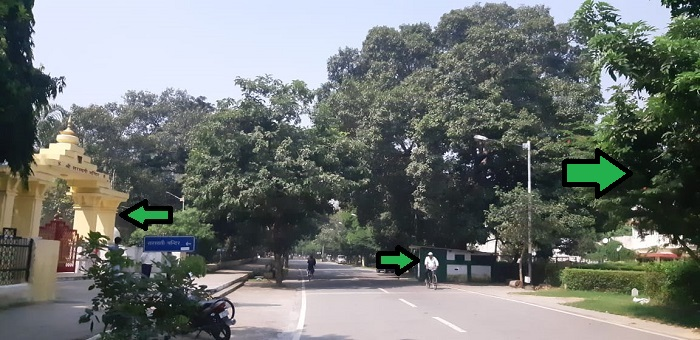

|  |
AboutIIT Roorkee is a place where people of different faiths come together in learning. To ensure that all their religious customs are maintained, a number of places of worship are constructed on campus. A Temple dedicated to the Goddess Saraswati, near the football field in Saraswati Kunj, a Church near the main gate and a Mosque near Khosla International House, all dot the campus and add to its charm. Among the most peaceful places on campus, all these places of worship are the prime destination when all one wants to do is get away from it all. |